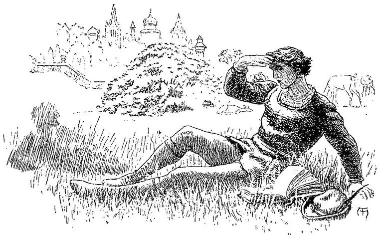

And self-withdrawn into a wondrous depth,
Far sinking into splendour—without end:
Fabric it seemed of diamond and of gold,
With alabaster domes, and silver spires,
And blazing terrace upon terrace, high
Uplifted.”
WORDSWORTH.
But when, after a sleep, which, although dreamless, yet left behind it a sense of past blessedness, I awoke in the full morning, I found, indeed, that the room was still my own; but that it looked abroad upon an unknown landscape of forest and hill and dale on the one side—and on the other, upon the marble court, with the great fountain, the crest of which now flashed glorious in the sun, and cast on the pavement beneath a shower of faint shadows from the waters that fell from it into the marble basin below.
Agreeably to all authentic accounts of the treatment of travellers in Fairy Land, I found by my bedside a complete suit of fresh clothing, just such as I was in the habit of wearing; for, though varied sufficiently from the one removed, it was yet in complete accordance with my tastes. I dressed myself in this, and went out. The whole palace shone like silver in the sun. The marble was partly dull and partly polished; and every pinnacle, dome, and turret ended in a ball, or cone, or cusp of silver. It was like frost-work, and too dazzling, in the sun, for earthly eyes like mine.

I will not attempt to describe the environs, save by saying, that all the pleasures to be found in the most varied and artistic arrangement of wood and river, lawn and wild forest, garden and shrubbery, rocky hill and luxurious vale; in living creatures wild and tame, in gorgeous birds, scattered fountains, little streams, and reedy lakes—all were here. Some parts of the palace itself I shall have occasion to describe more minutely.
For this whole morning I never thought of my demon shadow; and not till the weariness which supervened on delight brought it again to my memory, did I look round to see if it was behind me: it was scarcely discernible. But its presence, however faintly revealed, sent a pang to my heart, for the pain of which, not all the beauties around me could compensate. It was followed, however, by the comforting reflection that, peradventure, I might here find the magic word of power to banish the demon and set me free, so that I should no longer be a man beside myself. The Queen of Fairy Land, thought I, must dwell here: surely she will put forth her power to deliver me, and send me singing through the further gates of her country back to my own land. “Shadow of me!” I said; “which art not me, but which representest thyself to me as me; here I may find a shadow of light which will devour thee, the shadow of darkness! Here I may find a blessing which will fall on thee as a curse, and damn thee to the blackness whence thou hast emerged unbidden.” I said this, stretched at length on the slope of the lawn above the river; and as the hope arose within me, the sun came forth from a light fleecy cloud that swept across his face; and hill and dale, and the great river winding on through the still mysterious forest, flashed back his rays as with a silent shout of joy; all nature lived and glowed; the very earth grew warm beneath me; a magnificent dragon-fly went past me like an arrow from a bow, and a whole concert of birds burst into choral song.
The heat of the sun soon became too intense even for passive support. I therefore rose, and sought the shelter of one of the arcades. Wandering along from one to another of these, wherever my heedless steps led me, and wondering everywhere at the simple magnificence of the building, I arrived at another hall, the roof of which was of a pale blue, spangled with constellations of silver stars, and supported by porphyry pillars of a paler red than ordinary.—In this house (I may remark in passing), silver seemed everywhere preferred to gold; and such was the purity of the air, that it showed nowhere signs of tarnishing.—The whole of the floor of this hall, except a narrow path behind the pillars, paved with black, was hollowed into a huge basin, many feet deep, and filled with the purest, most liquid and radiant water. The sides of the basin were white marble, and the bottom was paved with all kinds of refulgent stones, of every shape and hue.
In their arrangement, you would have supposed, at first sight, that there was no design, for they seemed to lie as if cast there from careless and playful hands; but it was a most harmonious confusion; and as I looked at the play of their colours, especially when the waters were in motion, I came at last to feel as if not one little pebble could be displaced, without injuring the effect of the whole. Beneath this floor of the water, lay the reflection of the blue inverted roof, fretted with its silver stars, like a second deeper sea, clasping and upholding the first. The fairy bath was probably fed from the fountain in the court. Led by an irresistible desire, I undressed, and plunged into the water. It clothed me as with a new sense and its object both in one. The waters lay so close to me, they seemed to enter and revive my heart. I rose to the surface, shook the water from my hair, and swam as in a rainbow, amid the coruscations of the gems below seen through the agitation caused by my motion. Then, with open eyes, I dived, and swam beneath the surface. And here was a new wonder. For the basin, thus beheld, appeared to extend on all sides like a sea, with here and there groups as of ocean rocks, hollowed by ceaseless billows into wondrous caves and grotesque pinnacles. Around the caves grew sea-weeds of all hues, and the corals glowed between; while far off, I saw the glimmer of what seemed to be creatures of human form at home in the waters. I thought I had been enchanted; and that when I rose to the surface, I should find myself miles from land, swimming alone upon a heaving sea; but when my eyes emerged from the waters, I saw above me the blue spangled vault, and the red pillars around. I dived again, and found myself once more in the heart of a great sea. I then arose, and swam to the edge, where I got out easily, for the water reached the very brim, and, as I drew near washed in tiny waves over the black marble border. I dressed, and went out, deeply refreshed.
And now I began to discern faint, gracious forms, here and there throughout the building. Some walked together in earnest conversation. Others strayed alone. Some stood in groups, as if looking at and talking about a picture or a statue. None of them heeded me. Nor were they plainly visible to my eyes. Sometimes a group, or single individual, would fade entirely out of the realm of my vision as I gazed. When evening came, and the moon arose, clear as a round of a horizon-sea when the sun hangs over it in the west, I began to see them all more plainly; especially when they came between me and the moon; and yet more especially, when I myself was in the shade. But, even then, I sometimes saw only the passing wave of a white robe; or a lovely arm or neck gleamed by in the moonshine; or white feet went walking alone over the moony sward. Nor, I grieve to say, did I ever come much nearer to these glorious beings, or ever look upon the Queen of the Fairies herself. My destiny ordered otherwise.
In this palace of marble and silver, and fountains and moonshine, I spent many days; waited upon constantly in my room with everything desirable, and bathing daily in the fairy bath. All this time I was little troubled with my demon shadow I had a vague feeling that he was somewhere about the palace; but it seemed as if the hope that I should in this place be finally freed from his hated presence, had sufficed to banish him for a time. How and where I found him, I shall soon have to relate.
The third day after my arrival, I found the library of the palace; and here, all the time I remained, I spent most of the middle of the day. For it was, not to mention far greater attractions, a luxurious retreat from the noontide sun. During the mornings and afternoons, I wandered about the lovely neighbourhood, or lay, lost in delicious day-dreams, beneath some mighty tree on the open lawn. My evenings were by-and-by spent in a part of the palace, the account of which, and of my adventures in connection with it, I must yet postpone for a little.
The library was a mighty hall, lighted from the roof, which was formed of something like glass, vaulted over in a single piece, and stained throughout with a great mysterious picture in gorgeous colouring.
The walls were lined from floor to roof with books and books: most of them in ancient bindings, but some in strange new fashions which I had never seen, and which, were I to make the attempt, I could ill describe. All around the walls, in front of the books, ran galleries in rows, communicating by stairs. These galleries were built of all kinds of coloured stones; all sorts of marble and granite, with porphyry, jasper, lapis lazuli, agate, and various others, were ranged in wonderful melody of successive colours. Although the material, then, of which these galleries and stairs were built, rendered necessary a certain degree of massiveness in the construction, yet such was the size of the place, that they seemed to run along the walls like cords.
Over some parts of the library, descended curtains of silk of various dyes, none of which I ever saw lifted while I was there; and I felt somehow that it would be presumptuous in me to venture to look within them. But the use of the other books seemed free; and day after day I came to the library, threw myself on one of the many sumptuous eastern carpets, which lay here and there on the floor, and read, and read, until weary; if that can be designated as weariness, which was rather the faintness of rapturous delight; or until, sometimes, the failing of the light invited me to go abroad, in the hope that a cool gentle breeze might have arisen to bathe, with an airy invigorating bath, the limbs which the glow of the burning spirit within had withered no less than the glow of the blazing sun without.
One peculiarity of these books, or at least most of those I looked into, I must make a somewhat vain attempt to describe.
If, for instance, it was a book of metaphysics I opened, I had scarcely read two pages before I seemed to myself to be pondering over discovered truth, and constructing the intellectual machine whereby to communicate the discovery to my fellow men. With some books, however, of this nature, it seemed rather as if the process was removed yet a great way further back; and I was trying to find the root of a manifestation, the spiritual truth whence a material vision sprang; or to combine two propositions, both apparently true, either at once or in different remembered moods, and to find the point in which their invisibly converging lines would unite in one, revealing a truth higher than either and differing from both; though so far from being opposed to either, that it was that whence each derived its life and power. Or if the book was one of travels, I found myself the traveller. New lands, fresh experiences, novel customs, rose around me. I walked, I discovered, I fought, I suffered, I rejoiced in my success. Was it a history? I was the chief actor therein. I suffered my own blame; I was glad in my own praise. With a fiction it was the same. Mine was the whole story. For I took the place of the character who was most like myself, and his story was mine; until, grown weary with the life of years condensed in an hour, or arrived at my deathbed, or the end of the volume, I would awake, with a sudden bewilderment, to the consciousness of my present life, recognising the walls and roof around me, and finding I joyed or sorrowed only in a book. If the book was a poem, the words disappeared, or took the subordinate position of an accompaniment to the succession of forms and images that rose and vanished with a soundless rhythm, and a hidden rime.
In one, with a mystical title, which I cannot recall, I read of a world that is not like ours. The wondrous account, in such a feeble, fragmentary way as is possible to me, I would willingly impart. Whether or not it was all a poem, I cannot tell; but, from the impulse I felt, when I first contemplated writing it, to break into rime, to which impulse I shall give way if it comes upon me again, I think it must have been, partly at least, in verse.